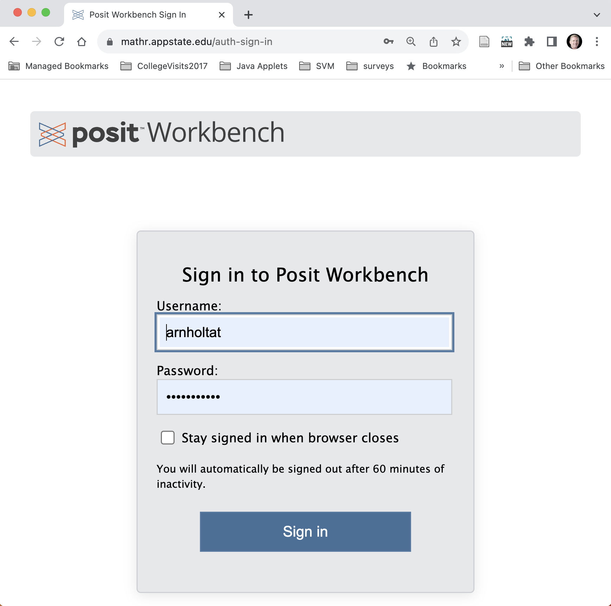

STT 3850 Syllabus - Spring 2025
Instructor: Dr. Alan T. Arnholt
Office: Walker Hall 237
Student Help Hours: 12:30-2:00 pm T & R, 2:00-3:00 pm W, and by appointment.
Make an appointment to see me by clicking here.
Course Description:
This course provides an overview of modern statistical data analysis. Programming with data, including simulations and bootstrapping, will be an integral part of the course. Techniques for parsing univariate and multivariate data sets will be examined. Coverage of probability, random variables, standard probability distributions and statistical sampling distributions will be sufficient to prepare the student for statistical inference. Inferential topics will include parameter estimation, hypothesis testing for proportions, means and medians, goodness of fit tests, and tests for independence. Standard and computationally intensive regression techniques may also be covered. (NUMERICAL DATA; COMPUTER) — Prerequisite: MAT 1110
Course Objectives:
- Students will learn how to use a reproducible research work flow.
- Students will improve their technology expertise.
- Students will learn to work with large data sets.
- Students will learn to create and present graphs for both univariate and multivariate data.
- Students will learn how to construct and test hypotheses using both classical and randomization approaches.
- Students will learn how to construct confidence intervals using both classical and bootstrap approaches.
- Students will learn how to generate random and simple random samples and their relationships to permutation and bootstrap distributions.
- Students will learn how to work with named sampling distributions (t, F, binomial, chi-square, and normal).
- Students will learn the scope of inferential conclusions for numerous scenarios (experiments, observational studies, etc.).
Course Texts:
Chester Ismay and Albert Y. Kim (2020). Statistical Inference via Data Science: A ModernDive into R and the Tidyverse
Chihara, L. and Hesterberg, T. (2019). Mathematical Statistics with Resampling and R, Second Edition. Hoboken, NJ: John Wiley & Sons, Inc.—Available on ASULearn
Mathematical Statistics with Resampling and R web site contains errata, solutions, datasets, and R scripts.
Other materials are available from the course webpage.
Course Grading & Assessment:
15% of the course grade will come from DataCamp assignments (25). DataCamp assignments are assigned for students to practice coding and to receive immediate computerized feedback. You should attempt to answer the DataCamp questions correctly and not simply ask the program to show you a solution. 60% of your DataCamp grade will be a binary grade (1 or 0) for completion of the assigned DataCamp Chapter. The remaining 40% of your DataCamp grade will be computed at the end of the course and will be based on your total XP points accumulated during the semester in DataCamp. (XP greater than 22,720 A; XP greater than 21,560B; XP greater than 20,400 C; XP greater than 19,240 D)
35% of the course grade will come from Problem Sets (9). See the grading rubric on the Course Pacing Guide for how Problem Sets will be evaluated.
Tiered Feedback Explanation
Level one. Problem Sets are graded using the rubric on the course pacing guide. The same rubric is used for all of the PS assignments, and you are graded on five categories with possible 3, 2, 1, or 0 points awarded per category. Everyone who accepts a Problem Set will receive level 1 feedback in their repository Issues.
Level two. If you cannot determine what you could do better on future assignments based on the rubric feedback, you can request annotated (Level 2) feedback. If you would like level 2 feedback, you should respond to me in the Issues (@alanarnholt) before noon the Monday after you receive level 1 feedback (which should arrive on Fridays) requesting Level 2 feedback.
I will provide Level two feedback using Issues in your repository to give additional details based on the rubric. Anyone may ask for Level 2 feedback. When you get your level 2 feedback (by Tuesday morning), you are expected to act on it to improve your code and mark the issues as “resolved” and message me in the Issues using (@alanarnholt) before noon on Wednesday.
Level three. After you have received your level 2 feedback, if you are still unclear as to how you can improve your work, you may request to meet with me during student help/office hours Wednesday to receive in-depth feedback and guidance for how to be more successful on the next assignment and how to resolve the Level 2 feedback/Git issues before noon on Thursday.
Asking for level 2 feedback is an agreement between you and me that you will revise and resubmit your document by noon on Thursday and I will look at your revisions and may revise your original rubric grade. If you ask for level 2 feedback and do not revise your document by noon of Thursday I may revise your original grade. After the Thursday following the Thursday when your PS is due, I will not review any further updates or corrections you push to your repository.
15% of the course grade will come from 5 Quizzes
10% of the course grade will come from the Midterm exam
25% of the course grade will come from the Final exam
University Policies
This course conforms with all Appalachian State University policies with respect to academic integrity, disability services, class attendance, and student engagement. The details of the policies may be found at https://academicaffairs.appstate.edu/resources/syllabi-policy-and-statement-information. Please pay particular attention to the student engagement statement.
Computers and Software
This course will use the RStudio/POSIT workbench server (https://mathr.appstate.edu/) that has the programs listed below and more installed.
You must have an active internet connection and be registered in the course to access the server. To access the server, point any web browser to https://mathr.appstate.edu/. Use your Appstate Username and Password to access the server. A screen shot of the POSIT workbench login screen is shown below.
If you have problems with your Appstate Username or Password visit IT Support Services or call 262-6266.
Required Technology
Note: All technology used in the class is either open source (free) or will be accessible to students enrolled in the course for no cost.
Assignments
The Course Pacing Guide has all course assignments and due dates.
Faculty student responsibilities
It is my (faculty) responsibility to explain and present the material you need to master for this course. A detailed description of everything you need to do starting with day one to the Final Exam is provided in the course pacing guide which is available on day one of the course.
It is your (student) responsibility to learn the material and to seek help if you do not understand the material.
Appalachian students are expected to make intensive engagement with courses their first priority. Practically speaking, students should spend approximately 2-3 hours on coursework outside of class for every hour they spend in class.
For this four-hour course, you you should anticipate 8-12 hours per week of outside work.
How To Do Well In This Course
The only way to learn statistics is to DO statistics, which includes using statistical software. Reading the textbook, learning the language, and practicing exercises using real data are critical to your learning and success. Class activities and assessments have been structured with these principles in mind.
You should read assigned textbook content and read/watch supplemental materials prior to coming to class. When you read the assigned material, you should complete the problems (not just read about them) on your paper and computer. It will be easier to participate if you acquire some familiarity with the vocabulary and methods before we start to discuss and use them. You must “speak the language” (both statistics and R) to demonstrate your knowledge effectively. If you come to class and have difficulty following the discussion, you should make sure you have read all of the assigned material and then go back and re-read the assigned material a second time. Reading a technical book is not the same as a novel. Most people, your instructor included, must read a technical section at least twice before understanding a topic. If you are still having challenges after reading the assigned material twice and working the out the material on paper and the computer, it is your responsibility to seek help. I am here to help and will be glad to assist you in your learning process. Please make an appointment to visit with me on my calendar.
How To Get Unstuck
Well constructed questions will elicit answers more rapidly than poorly constructed questions. This video provides some background on asking questions. This stackoverflow thread details how to create a minimal R reproducible example. Please read How To Ask Questions The Smart Way by Eric Raymond and Rick Moen and heed their advice.